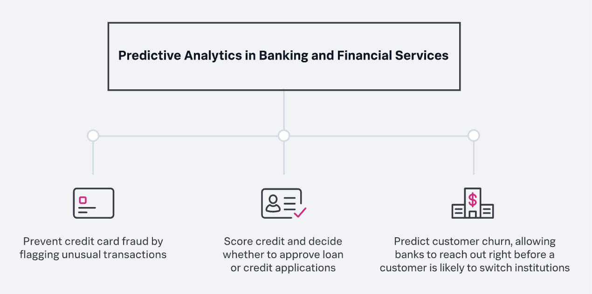
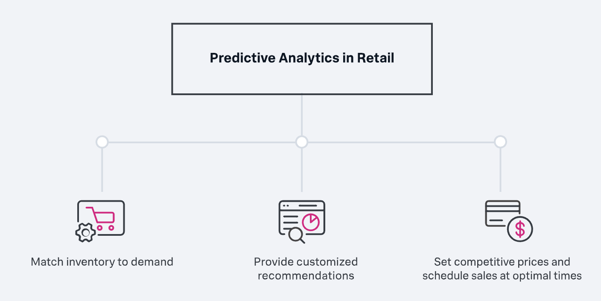
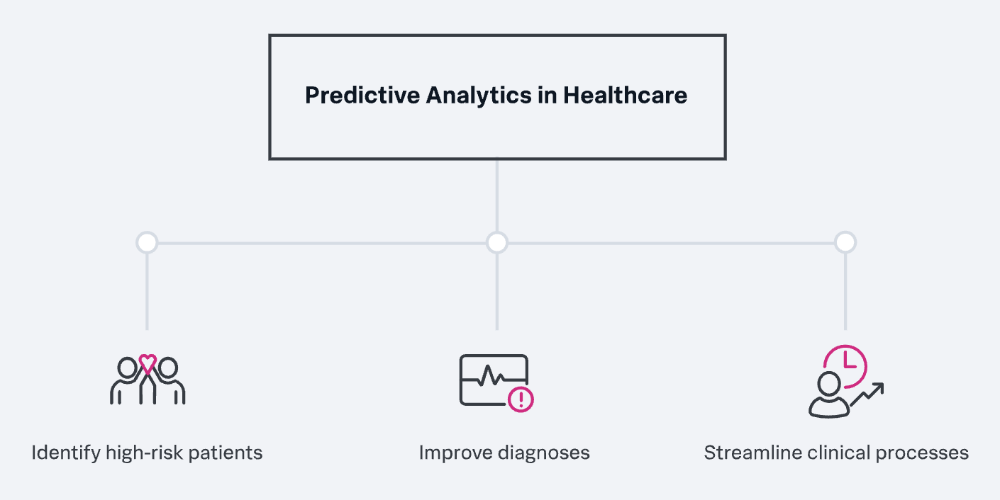
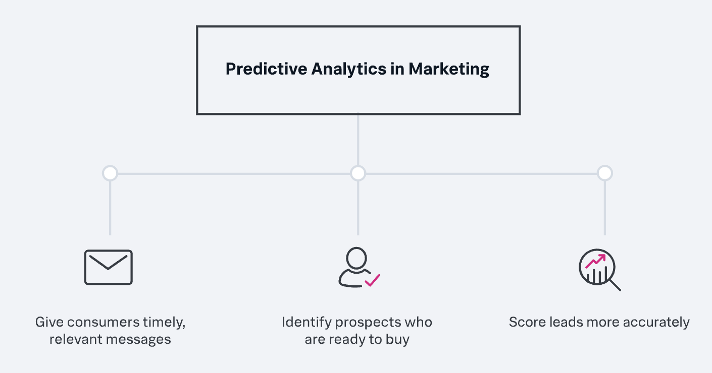

Waeder
Predictive Analytics
What is Predictive Analytics?
Predictive Analytics is a process in which mathematical models are applied to large amounts of data to identify patterns in past behavior and predict future outcomes. The combination of data mining, machine learning and statistical algorithms provides the “predictive” and predictive component and enables predictive analytics tools to go beyond simple correlation. There is a wide range of possible applications for predictive analytics in business:
Predictive analytics in banking and finance &
Predictive analytics is valuable across the spectrum of banking and financial services activities, from risk assessment to optimizing customer relationships.

Predictive analytics in Retail
In retail, whether online or brick and mortar, inventory and logistics must be managed. Predictive analytics tools allow retailers to correlate massive amounts of data—historical sales, purchasing habits, geographic preferences, and even weather data—to optimize performance.

Predictive Analytics in Healthcare
Based on global disease statistics, drug interactions, individual patient histories, and more, predictive analytics can help healthcare professionals provide better care and run practices and hospitals more efficiently and effectively.

Predictive analytics in manufacturing
In a modern, highly automated factory, predictive analytics tools can be used to monitor and optimize every step in the manufacturing process. This applies to aspects of design, purchasing, production, quality control, inventory management, delivery and more.
